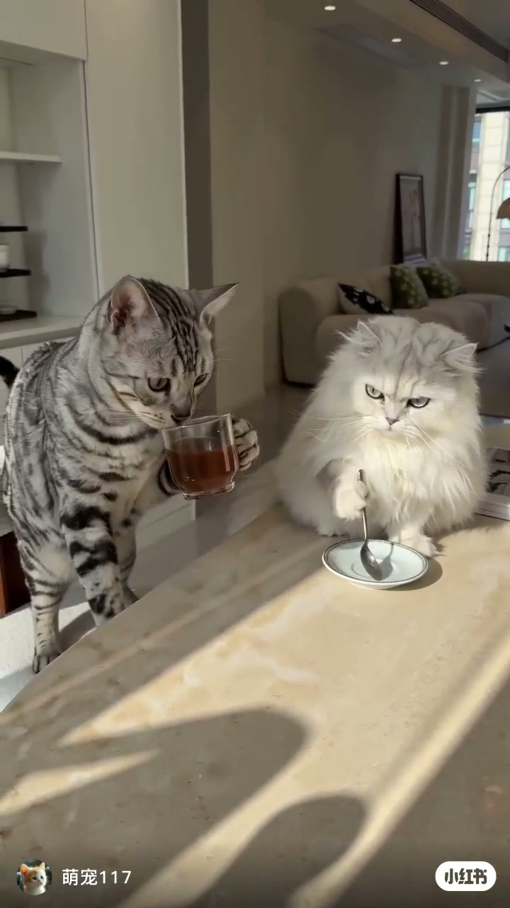
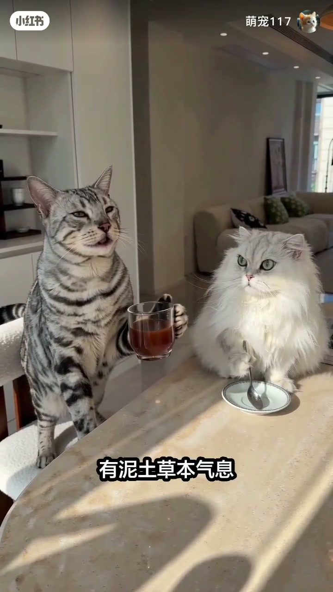
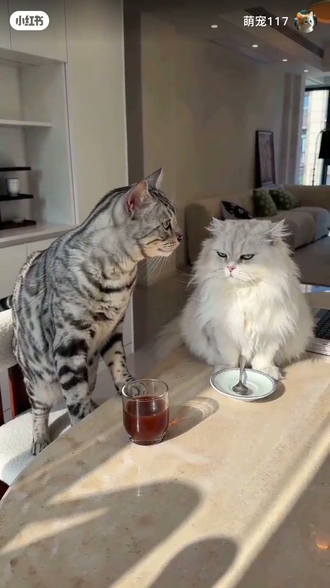

内容要点
知识结构
[00:00→00:08]
开场端杯
灰猫举杯啜饮，像模像样进入「品鉴模式」。
[00:08→00:16]
装腔术语
字幕出现「有泥土草本气息」等话术，配合猫脸表情。
[00:16→00:24]
被戳穿
对照文案：装懂设定被当场拆穿，笑点在反差。
总结
萌宠小剧场：用咖啡黑话反衬「装懂」的滑稽，不是正经品鉴教学。
图文实录
端起杯子进入人设
00:00 – 00:08
厨房台面上，灰美短直立端着玻璃杯，白长毛猫坐在旁边眼神锐利——画面先立住「老公装品鉴师」的人设。

[00:04]灰猫端杯、白猫旁观：装懂开场
Gray cat sips from a cup while the white cat watches: fake-expert opening
泥土草本气息？
00:08 – 00:16
字幕打出「有泥土草本气息」，叠在猫脸特写上：典型「咖啡黑话」被挪用成萌宠台词，笑点来自一本正经。
酸度压的很低（Whisper 残段，宜作笑料而非参数）

[00:12]字幕「有泥土草本气息」：装腔术语上桌
Subtitle “earthy herbal notes”: pretentious tasting jargon for comedy
人设崩塌
00:16 – 00:24
按笔记设定，装懂被当场戳穿；第三帧延续两猫对峙/互动，完成「装X名场面」的反转。读者勿把片中术语当咖啡课。

[00:20]收束：装懂人设被拆穿的萌宠反差
Payoff: the pretend coffee expert persona gets exposed